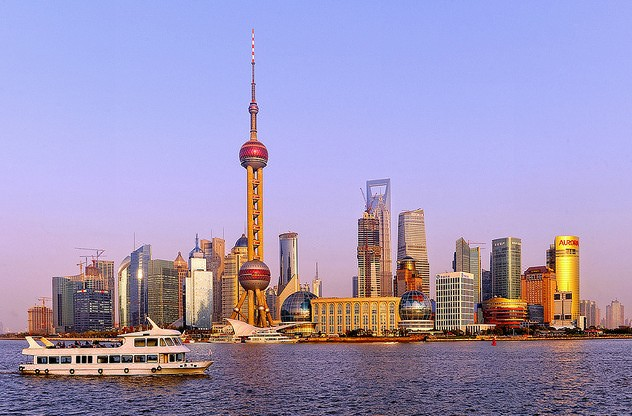
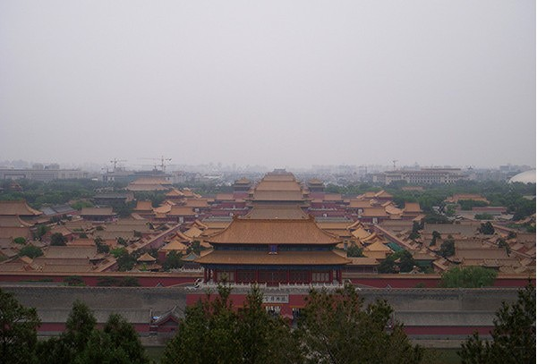

上海旅行
上海市简称沪。地处我国东部海岸中段，江入海口。自古为海边渔村，春秋时为楚国春申君封邑，宋设镇，始称上海。１９２７年设市。现为我国四大直辖市之一，辖７区、３县。为我国对外开放城市之一。全市面积５８００平方千米，是世界大都市之一。上海地处长江三角洲平原东端，平均海拔为四米，仅西部松江区有少数残丘，天马山最高，海拔９８.2米。长江口的崇明岛面积１０８３多平方千米，是我国仅次于台湾和海南的第三大岛。
北京旅行
 北京最早见于文献的名称叫做蓟（公元前11世纪时西周的一个分封国），后来一直是燕的都城，之后北京还有过南京、燕京、中都等名称。直到元初新的“元大都”全部建成，北京被马可・波罗中称之为“世界莫能与比”，也从此取代了长安、洛阳、汴梁等古都的地位，成为中国的政治中心，并延续到明、清两代。解放后成为中华人民共和国的首都，目前是中国的政治、文化和经济中心。
拉萨旅行
 公元七世纪，当雅鲁藏布江河谷的统治者松赞干布继承他父亲统一西藏的理想，拉萨的地位上升到了一个重要的行政中心。松赞干布将他的首府迁到了拉萨并且在现在布达拉的位置上建造了宫殿。当时还建造了小昭寺和大昭寺来安置松赞干布的妻子带到西藏的佛像嫁妆。
250年后，随着雅鲁藏布江帝国崩塌，佛教在拉萨的寺院中心逐渐复苏。权力中心转移到了萨迦、乃东和接下来的日喀则。拉萨不再是首府，它在西藏的历史中逐渐隐退，直到五世达赖喇嘛（1617－82）在蒙古人的帮助下打败了西藏日喀则王国。
公元七世纪，当雅鲁藏布江河谷的统治者松赞干布继承他父亲统一西藏的理想，拉萨的地位上升到了一个重要的行政中心。松赞干布将他的首府迁到了拉萨并且在现在布达拉的位置上建造了宫殿。当时还建造了小昭寺和大昭寺来安置松赞干布的妻子带到西藏的佛像嫁妆。
250年后，随着雅鲁藏布江帝国崩塌，佛教在拉萨的寺院中心逐渐复苏。权力中心转移到了萨迦、乃东和接下来的日喀则。拉萨不再是首府，它在西藏的历史中逐渐隐退，直到五世达赖喇嘛（1617－82）在蒙古人的帮助下打败了西藏日喀则王国。其他景点
常见问题

问：我应该如何订票？
答：您好！目前网站提供2种订票方式：
电话预订：预订电话是1010-6060
网上预订：选择景点→填写信息→生成订单→查收短信→取票游玩
问：我可以预定多长时间的门票？
答：您好！一般情况下，可以在 中国旅行网网站上订购一个月内的门票，游玩日期在下订单的时候需要明确。如果订单生成后需要修改游玩日期，请致电客服中心1010-6060，由客服人员帮您修改。
问：可以当天订票吗？
答：您好！一般需要提前1天预订，游玩日期前一天中午12点前。
部分支持手机电子票（二维码）的景点，支持当天预订当天游玩。
如遇特殊情况可致电客服中心1010-6060咨询。
订购注意事项
1、请至少提前1天预订（如遇特殊情况可致电客服咨询），酒店预订须致电客服下单，客服人员将与酒店确认有无房间之后再与订票人确认订购。
2、证件(如身份证、驾照、护照)和订单短信，是游客到达景点购买会员价门票及取票的凭证。如订单短信不慎遗失或删除，请致电客服。
3、如需订单修改或取消，请在入园前一天中午12点前致电客服。